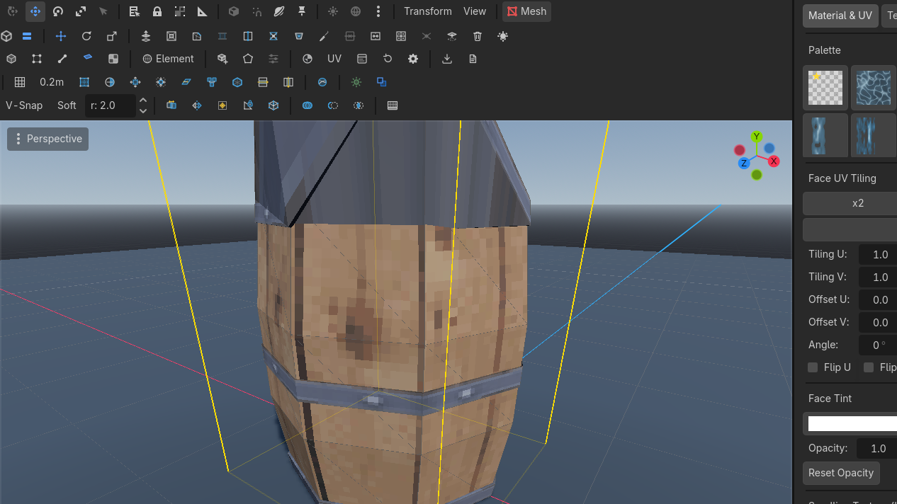
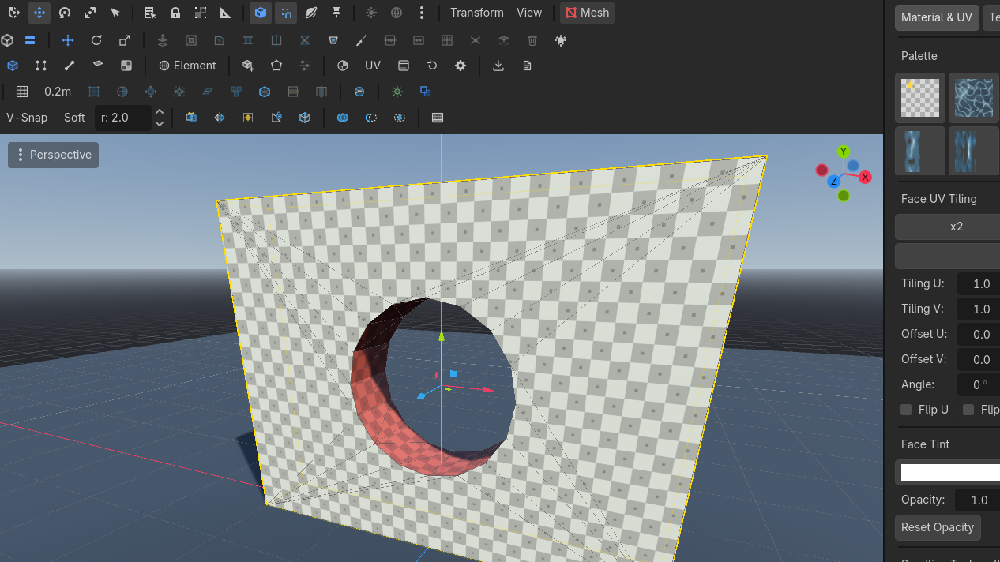

Objects & CSG
Merge, mirror, pivots, freeze. Poibuilderize turns any MeshInstance3D or CSG into an editable mesh. Booleans pick the target first and the cutter last.
Row 4 of the toolbar (Extended Tools).
Object ops
Combines multiple selected PBMesh nodes into one, baking relative transforms.
| Button | Effect |
|---|---|
| Merge Objs | Selected PBMesh nodes become one |
| Mirror | Geometry across X |
| Center Pivot | Pivot to bounding-box center |
| Freeze Xform | Bake the transform into vertex positions, reset the node transform |
| Poibuilderize | Convert selected MeshInstance3D or CSGShape3D (including CSGCombiner3D) into a PBMesh |
Object state — Lit & Cast Shadows
Row 3 (Extended Tools) carries two toggles that apply to the whole scene selection — any PBMesh, MeshInstance3D or CSG node:
 Lit
Lit Row 3 · Object StateLitUnbound (rebindable)Shading on/off for every selected object. Mixed selections render unchecked; checking synchronizes all of them.Needs: Selected objects — shading on/off. Unlit objects render at full brightness and ignore scene lights.
Row 3 · Object StateLitUnbound (rebindable)Shading on/off for every selected object. Mixed selections render unchecked; checking synchronizes all of them.Needs: Selected objects — shading on/off. Unlit objects render at full brightness and ignore scene lights.- Cast ShadowsRow 3 · Object StateCast ShadowsUnbound (rebindable)Shadow casting on/off for every selected object. Same mixed-checkbox semantics as Lit.Needs: Selected objects — shadow casting on/off.
Both follow mixed-checkbox semantics: all selected objects on = checked, all off (or mixed) = unchecked, and checking it synchronizes every selected object. They are rebindable in Editor Settings (Object: Toggle Lit / Cast Shadows).
Typical use: unshadow a scrolling water plane before a retro export, or unlight a glow strip so it reads emissive.
Poibuilderize
Converts any standard MeshInstance3D or CSG node into an editable native PBMesh.
Imported GLBs and Godot primitives are not editable as faces until you convert them.
- Instance the GLB. Make the instance local / editable children.
- Select the
MeshInstance3D(or a CSG node).  Poibuilderize
Poibuilderize


 Row 4 · Object ToolsPoibuilderizeUnbound (rebindable)Converts any MeshInstance3D or CSG shape (including CSGCombiner3D) into an editable PBMesh.Needs: A MeshInstance3D or CSG node. A new
Row 4 · Object ToolsPoibuilderizeUnbound (rebindable)Converts any MeshInstance3D or CSG shape (including CSGCombiner3D) into an editable PBMesh.Needs: A MeshInstance3D or CSG node. A new PBMeshappears with per-triangle corners, welds rebuilt, materials copied.- Pull a face. It is a PoiBuilder mesh now.

Heavy meshes stay heavy — every triangle is a face. Collapsing and merging after convert is the usual cleanup.
A MeshInstance3D you do not convert still exports to retro .pbm. Textures are sanitized (power-of-two, clamped to max size) on the way out. Convert only if you need to edit faces.
CSG booleans
Subtracts the cutter mesh from the target mesh with full scene Undo/Redo.
| Button | Tooltip rule |
|---|---|
| Union | Solid union. Select target first, cutter last |
| Subtract | Subtract the last-selected from the first-selected |
| Intersect | Solid intersection. Target first, cutter last |
Works across PoiBuilder meshes, ordinary MeshInstance3D, and CSG nodes. Operands must be watertight; a failure names the open-boundary count in the Output log.
Undo puts the cutter back in the tree (the node was removed on do, referenced on undo).

Use case — a round window
- Wall cube (target). Cylinder through it (cutter).
- Select the wall, Shift-select the cylinder.
 CSG Subtract
CSG Subtract
 Row 4 · CSG BooleansCSG SubtractUnbound (rebindable)Subtracts the LAST-selected mesh from the FIRST-selected mesh.Needs: Target + cutter selected. Hole. Ctrl+Z — the cylinder returns.
Row 4 · CSG BooleansCSG SubtractUnbound (rebindable)Subtracts the LAST-selected mesh from the FIRST-selected mesh.Needs: Target + cutter selected. Hole. Ctrl+Z — the cylinder returns.
CSG did nothing? Read the Output log. Open boundaries abort the op. Fill Hole / weld the mesh, or Poibuilderize a CSG primitive that is already closed.
"My GLB has no gizmo" — it is not a PBMesh yet. Poibuilderize it. Clicks on a MeshInstance3D go to Godot's object gizmo, not face picking.